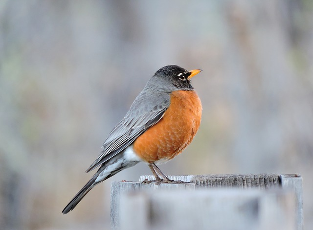
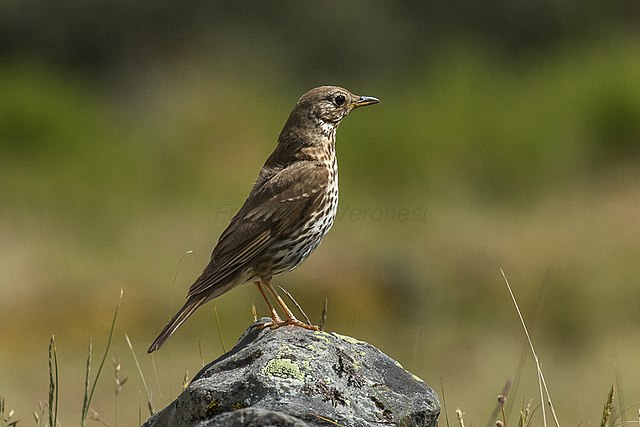
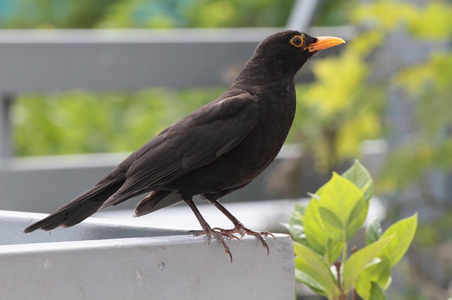

The American robin (Turdus migratorius) is a migratory songbird of the true thrush genus and Turdidae, the wider thrush family. It is named after the European robin[2] because of its reddish-orange breast, though the two species are not closely related, with the European robin belonging to the Old World flycatcher family.

The Song Thrush (Turdus philomelos) is a thrush that breeds across the West Palearctic. It has brown upper-parts and black-spotted cream or buff underparts and has three recognised subspecies. Its distinctive song, which has repeated musical phrases, has frequently been referred to in poetry.

The Bkack Bird(Agelaius phoeniceus) is a passerine bird of the family Icteridae found in most of North America and much of Central America. It breeds from Alaska and Newfoundland south to Florida, the Gulf of Mexico, Mexico, and Guatemala, with isolated populations in western El Salvador, northwestern Honduras, and northwestern Costa Rica.